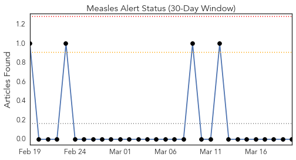
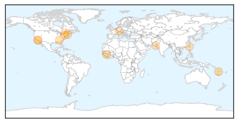
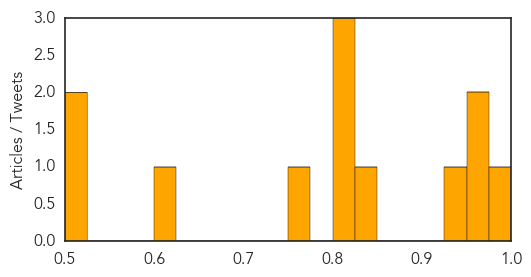
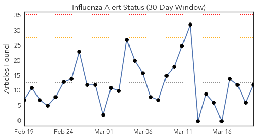
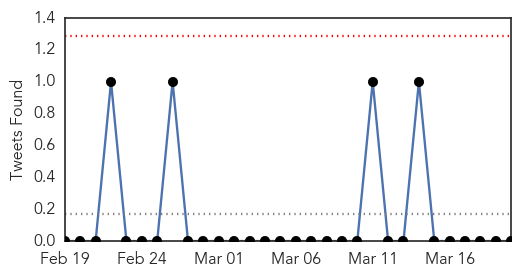
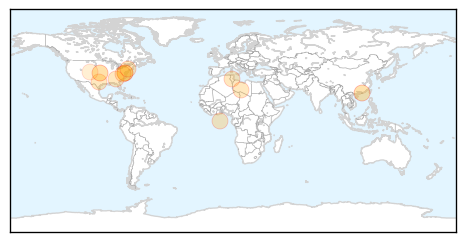
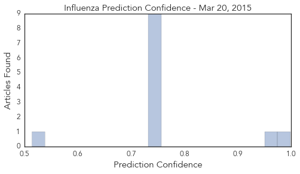

Measles
30-Day Web Trend
0 alerts, 0 warnings

30-Day Twitter Trend
3 alerts, 0 warnings

Article Locations
Article Confidences
Top Articles:
- 0.998
- WHO Urges Mass Measles Vaccinations in Ebola Regions
- 0.973
- Attorney Demolishes Pro-Vaccine Talking Points, Lays Bare The Shocking Facts About Vaccination Risks And Dangers
- 0.963
- A Day in the Life of a CAST Alum: Alan Janssen, Health Sciences
- 0.943
- Behind the measles outbreak
- 0.841
- Dana Hills High School
- 0.822
- Hardly any measles case in Sindh, SHC told
- 0.813
- Anti-vaxxer bets $100k measles 'doesn't exist' ... and loses (of course)
- 0.812
- Hunt is on for 1,500 China Airlines passengers who may be infected with rubella
- 0.768
- Sweden doctor in huge measles court case win
- 0.603
- News reader
- 0.522
- When life gets in the way of immunization
- 0.504
- Mass measles vaccination program targets children in Port Vila
Top Tweets:
-
No tweets found for Mar 20, 2015
Influenza
30-Day Web Trend
0 alerts, 0 warnings

30-Day Twitter Trend
0 alerts, 0 warnings

Article Locations
Article Confidences
Top Articles:
- 0.998
- influenza pandemic of 1918-19
- 0.966
- Hong Kong flu update: More than 400 deaths, Southern hemisphere seasonal flu shot recommended
- 0.751
- March 20, 2015 Archives
- 0.751
- March 19, 2015 Archives
- 0.751
- March 19, 2015 Archives
- 0.751
- March 19, 2015 Archives
- 0.751
- March 19, 2015 Archives
- 0.751
- March 19, 2015 Archives
- 0.751
- March 19, 2015 Archives
- 0.751
- March 19, 2015 Archives
- 0.751
- March 19, 2015 Archives
- 0.514
- Safety experts slam lax safety practices at CDC labs
Top Tweets:
-
No tweets found for Mar 20, 2015